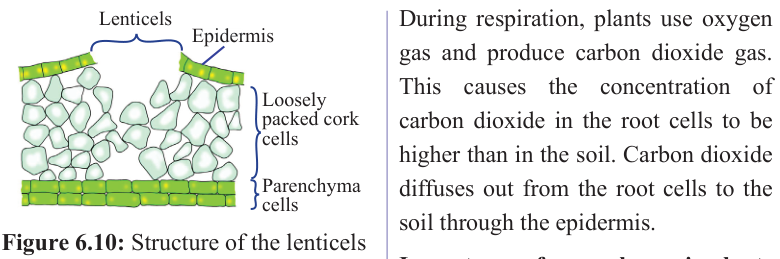
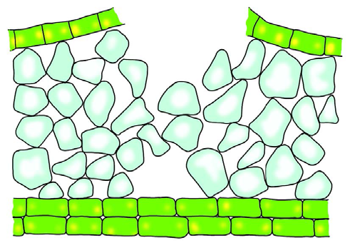

140
Student’s Book - Form Two
Biology for Secondary Schools

Lenticels
Epidermis
Loosely packed cork cells
Parenchyma cells
Figure 6.10: Structure of the lenticels
The loose arrangement of the cells facilitates the movement of gases between them. The cells have a thin layer of moisture so that gases diffuse in and out in solution form.
The concentration of oxygen is higher in
the intercellular air spaces than in the cork
cells. Oxygen, therefore, diffuses into the
cork cells surrounding the lenticels. The
cork cells use oxygen for respiration
and produce carbon dioxide. Thus, the concentration of carbon dioxide in the
cork cells becomes higher than in the
intercellular air spaces. Carbon dioxide,
therefore, diffuses out through the cork
cells into the intercellular air spaces and
then out through the lenticels.
Gas exchange through the roots
Gas
exchange
occurs
through
breathing roots. Plants with breathing roots have a very thin epidermal layer which enables the root to carry out gas exchange. Oxygen is at a higher concentration in the soil than in the root cells. Therefore, oxygen diffuses into the root cells through the epidermis.
During respiration, plants use oxygen gas and produce carbon dioxide gas.
This causes the concentration of carbon dioxide in the root cells to be higher than in the soil. Carbon dioxide diffuses out from the root cells to the soil through the epidermis.
Importance of gas exchange in plants
(i)
It enables plants to obtain carbon
dioxide gas, which is one of
the necessary raw materials for
photosynthesis.
(ii) It enables plants to obtain oxygen
gas, which is necessary for the
production of energy. Energy is
produced during respiration.
(iii) It enables plants to remove excess
carbon dioxide gas during the
night. If not removed, the carbon
dioxide gas would harm the plant.
Exercise 6.2
1.
Explain clearly how each of
the following parts of the leaf facilitates gas exchange:
(a) Lamina
(b) Lower epidermis
(c) Spongy mesophyll
2.
Describe the magnified side view
of a leaf.
3.
Describe the effect of opening and
closing of the stomata on the rate
08/04/2026 10:18:36